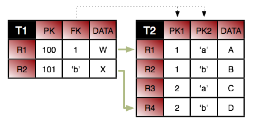

3.8.6. Non-Standard Joins
The JPA Overview’s Mapping Metadata explains join mapping. All of the examples in that document, however, use "standard" joins, in that there is one foreign key column for each primary key column in the target table. OpenJPA supports additional join patterns, including partial primary key joins, non-primary key joins, and joins using constant values.
In a partial primary key join, the source table only has foreign key columns for a subset of the primary key columns in the target table. So long as this subset of columns correctly identifies the proper row(s) in the referenced table, OpenJPA will function properly. There is no special syntax for expressing a partial primary key join - just do not include column definitions for missing foreign key columns.
In a non-primary key join, at least one of the target columns is not a primary key. Once again, OpenJPA supports this join type with the same syntax as a primary key join. There is one restriction, however: each non-primary key column you are joining to must be controlled by a field mapping that implements the org.apache.openjpa.jdbc.meta.Joinable interface. All built in basic mappings implement this interface, including basic fields of embedded objects. OpenJPA will also respect any custom mappings that implement this interface. See Custom Mappings for an examination of custom mappings.
Not all joins consist of only links between columns. In some cases you might have a schema in which one of the join criteria is that a column in the source or target table must have some constant value. OpenJPA calls joins involving constant values constant joins.
To form a constant join in JPA mapping, first set the JoinColumn's name attribute to the name of the column.
If the column with the constant value is the target of the join, give its fully qualified name in the form <table name>.<column name>.
Next, set the referencedColumnName attribute to the constant value.
If the constant value is a string, place it in single quotes to differentiate it from a column name.

Consider the tables above.
First, we want to join row T1.R1 to row T2.R1.
If we just join column T1.FK to T2.PK1, we will wind up matching both T2.R1 and T2.R2.
So in addition to joining
T1.FK to T2.PK1, we also have to specify that T2.PK2 has the value a.
Here is how we’d accomplish this in mapping metadata.
@Entity
@Table(name="T1")
public class ... {
@ManyToOne
@JoinColumns({
@JoinColumn(name="FK" referencedColumnName="PK1"),
@JoinColumn(name="T2.PK2" referencedColumnName="'a'")
});
private ...;
}Notice that we had to fully qualify the name of column PK2 because it is in the target table.
Also notice that we put single quotes around the constant value so that it won’t be confused with a column name.
You do not need single quotes for numeric constants.
For example, the syntax to join T1.R2 to T2.R4 is:
@Entity
@Table(name="T1")
public class ... {
@ManyToOne
@JoinColumns({
@JoinColumn(name="FK" referencedColumnName="PK2"),
@JoinColumn(name="T2.PK1" referencedColumnName="2")
});
private ...;
}Finally, from the inverse direction, these joins would look like this:
@Entity
@Table(name="T2")
public class ... {
@ManyToOne
@JoinColumns({
@JoinColumn(name="T1.FK" referencedColumnName="PK1"),
@JoinColumn(name="PK2" referencedColumnName="'a'")
});
private ...;
@ManyToOne
@JoinColumns({
@JoinColumn(name="T1.FK" referencedColumnName="PK2"),
@JoinColumn(name="PK1" referencedColumnName="2")
});
private ...;
}